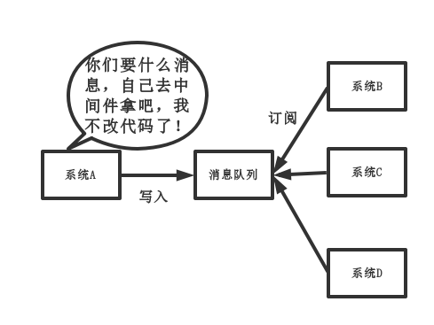

分布式之消息队列复习精讲
引言
为什么写这篇文章?
博主有两位朋友分别是小 A 和小 B:
- 小 A，工作于传统软件行业 (某社保局的软件外包公司)，每天工作内容就是和产品聊聊需求，改改业务逻辑。再不然就是和运营聊聊天，写几个 SQL，生成下报表。又或者接到客服的通知，某某功能故障了，改改数据，然后下班部署上线。每天过的都是这种生活，技术零成长。
- 小 B，工作于某国企，虽然能接触到一些中间件技术。然而，他只会订阅 / 发布消息。通俗点说，就是调调 API。对为什么使用这些中间件啊？如何保证高可用啊？没有充分的认识。
庆幸的是两位朋友都很有上进心，于是博主写这篇文章，帮助他们复习一下关于消息队列中间件这块的要点
复习要点
本文大概围绕如下几点进行阐述:
- 为什么使用消息队列？
- 使用消息队列有什么缺点?
- 消息队列如何选型?
- 如何保证消息队列是高可用的？
- 如何保证消息不被重复消费?
- 如何保证消费的可靠性传输?
- 如何保证消息的顺序性？
我们围绕以上七点进行阐述。需要说明一下，本文不是《消息队列从入门到精通》这种课程，因此只是提供一个复习思路，而不是去教你们怎么调用消息队列的 API。建议对消息队列不了解的人，去找点消息队列的博客看看，再看本文，收获更大
正文
1、为什么要使用消息队列?
分析: 一个用消息队列的人，不知道为啥用，这就有点尴尬。没有复习这点，很容易被问蒙，然后就开始胡扯了。
回答: 这个问题, 咱只答三个最主要的应用场景 (不可否认还有其他的，但是只答三个主要的), 即以下六个字: 解耦、异步、削峰
(1) 解耦
传统模式:
传统模式的缺点：
- 系统间耦合性太强，如上图所示，系统 A 在代码中直接调用系统 B 和系统 C 的代码，如果将来 D 系统接入，系统 A 还需要修改代码，过于麻烦！
中间件模式:

中间件模式的的优点：
- 将消息写入消息队列，需要消息的系统自己从消息队列中订阅，从而系统 A 不需要做任何修改。
(2) 异步
传统模式:
传统模式的缺点：
- 一些非必要的业务逻辑以同步的方式运行，太耗费时间。
中间件模式:

中间件模式的的优点：
- 将消息写入消息队列，非必要的业务逻辑以异步的方式运行，加快响应速度
(3) 削峰
传统模式
传统模式的缺点：
- 并发量大的时候，所有的请求直接怼到数据库，造成数据库连接异常
中间件模式:
中间件模式的的优点：
- 系统 A 慢慢的按照数据库能处理的并发量，从消息队列中慢慢拉取消息。在生产中，这个短暂的高峰期积压是允许的。
2、使用了消息队列会有什么缺点?
分析: 一个使用了 MQ 的项目，如果连这个问题都没有考虑过，就把 MQ 引进去了，那就给自己的项目带来了风险。我们引入一个技术，要对这个技术的弊端有充分的认识，才能做好预防。要记住，不要给公司挖坑！
回答: 回答也很容易，从以下两个个角度来答
- 系统可用性降低: 你想啊，本来其他系统只要运行好好的，那你的系统就是正常的。现在你非要加个消息队列进去，那消息队列挂了，你的系统不是呵呵了。因此，系统可用性降低
- 系统复杂性增加: 要多考虑很多方面的问题，比如一致性问题、如何保证消息不被重复消费，如何保证保证消息可靠传输。因此，需要考虑的东西更多，系统复杂性增大。
但是，我们该用还是要用的。
3、消息队列如何选型?
先说一下，博主只会 ActiveMQ,RabbitMQ,RocketMQ,Kafka，对什么 ZeroMQ 等其他 MQ 没啥理解，因此只能基于这四种 MQ 给出回答。
分析: 既然在项目中用了 MQ，肯定事先要对业界流行的 MQ 进行调研，如果连每种 MQ 的优缺点都没了解清楚，就拍脑袋依据喜好，用了某种 MQ，还是给项目挖坑。如果面试官问:"你为什么用这种 MQ？。" 你直接回答 "领导决定的。" 这种回答就很 LOW 了。还是那句话，不要给公司挖坑。
回答: 首先，咱先上 ActiveMQ 的社区，看看该 MQ 的更新频率:
Apache ActiveMQ 5.15.3 Release
Christopher L. Shannon posted on Feb 12, 2018
Apache ActiveMQ 5.15.2 Released
Christopher L. Shannon posted on Oct 23, 2017
Apache ActiveMQ 5.15.0 Released
Christopher L. Shannon posted on Jul 06, 2017
省略以下记录
...
我们可以看出，ActiveMq 几个月才发一次版本，据说研究重心在他们的下一代产品 Apollo。
接下来，我们再去 RabbitMQ 的社区去看一下, RabbitMQ 的更新频率
RabbitMQ 3.7.3 release 30 January 2018
RabbitMQ 3.6.15 release 17 January 2018
RabbitMQ 3.7.2 release23 December 2017
RabbitMQ 3.7.1 release21 December 2017
省略以下记录
...
我们可以看出，RabbitMQ 版本发布比 ActiveMq 频繁很多。至于 RocketMQ 和 kafka 就不带大家看了，总之也比 ActiveMQ 活跃的多。详情，可自行查阅。
再来一个性能对比表
| 特性 | ActiveMQ | RabbitMQ | RocketMQ | kafka |
|---|---|---|---|---|
| 开发语言 | java | erlang | java | scala |
| 单机吞吐量 | 万级 | 万级 | 10 万级 | 10 万级 |
| 时效性 | ms 级 | us 级 | ms 级 | ms 级以内 |
| 可用性 | 高 (主从架构) | 高 (主从架构) | 非常高 (分布式架构) | 非常高 (分布式架构) |
| 功能特性 | 成熟的产品，在很多公司得到应用；有较多的文档；各种协议支持较好 | 基于 erlang 开发，所以并发能力很强，性能极其好，延时很低; 管理界面较丰富 | MQ 功能比较完备，扩展性佳 | 只支持主要的 MQ 功能，像一些消息查询，消息回溯等功能没有提供，毕竟是为大数据准备的，在大数据领域应用广。 |
综合上面的材料得出以下两点:
(1) 中小型软件公司，建议选 RabbitMQ. 一方面，erlang 语言天生具备高并发的特性，而且他的管理界面用起来十分方便。正所谓，成也萧何，败也萧何！他的弊端也在这里，虽然 RabbitMQ 是开源的，然而国内有几个能定制化开发 erlang 的程序员呢？所幸，RabbitMQ 的社区十分活跃，可以解决开发过程中遇到的 bug，这点对于中小型公司来说十分重要。不考虑 rocketmq 和 kafka 的原因是，一方面中小型软件公司不如互联网公司，数据量没那么大，选消息中间件，应首选功能比较完备的，所以 kafka 排除。不考虑 rocketmq 的原因是，rocketmq 是阿里出品，如果阿里放弃维护 rocketmq，中小型公司一般抽不出人来进行 rocketmq 的定制化开发，因此不推荐。
(2) 大型软件公司，根据具体使用在 rocketMq 和 kafka 之间二选一。一方面，大型软件公司，具备足够的资金搭建分布式环境，也具备足够大的数据量。针对 rocketMQ, 大型软件公司也可以抽出人手对 rocketMQ 进行定制化开发，毕竟国内有能力改 JAVA 源码的人，还是相当多的。至于 kafka，根据业务场景选择，如果有日志采集功能，肯定是首选 kafka 了。具体该选哪个，看使用场景。
4、如何保证消息队列是高可用的？
分析: 在第二点说过了，引入消息队列后，系统的可用性下降。在生产中，没人使用单机模式的消息队列。因此，作为一个合格的程序员，应该对消息队列的高可用有很深刻的了解。如果面试的时候，面试官问，你们的消息中间件如何保证高可用的？你的回答只是表明自己只会订阅和发布消息，面试官就会怀疑你是不是只是自己搭着玩，压根没在生产用过。请做一个爱思考，会思考，懂思考的程序员。
回答: 这问题，其实要对消息队列的集群模式要有深刻了解，才好回答。
以 rcoketMQ 为例，他的集群就有多 master 模式、多 master 多 slave 异步复制模式、多 master 多 slave 同步双写模式。多 master 多 slave 模式部署架构图 (网上找的, 偷个懒，懒得画):

其实博主第一眼看到这个图，就觉得和 kafka 好像，只是 NameServer 集群，在 kafka 中是用 zookeeper 代替，都是用来保存和发现 master 和 slave 用的。通信过程如下:
Producer 与 NameServer 集群中的其中一个节点（随机选择）建立长连接，定期从 NameServer 获取 Topic 路由信息，并向提供 Topic 服务的 Broker Master 建立长连接，且定时向 Broker 发送心跳。Producer 只能将消息发送到 Broker master，但是 Consumer 则不一样，它同时和提供 Topic 服务的 Master 和 Slave 建立长连接，既可以从 Broker Master 订阅消息，也可以从 Broker Slave 订阅消息。
那么 kafka 呢, 为了对比说明直接上 kafka 的拓补架构图 (也是找的，懒得画)

如上图所示，一个典型的 Kafka 集群中包含若干 Producer（可以是 web 前端产生的 Page View，或者是服务器日志，系统 CPU、Memory 等），若干 broker（Kafka 支持水平扩展，一般 broker 数量越多，集群吞吐率越高），若干 Consumer Group，以及一个 Zookeeper 集群。Kafka 通过 Zookeeper 管理集群配置，选举 leader，以及在 Consumer Group 发生变化时进行 rebalance。Producer 使用 push 模式将消息发布到 broker，Consumer 使用 pull 模式从 broker 订阅并消费消息。
至于 rabbitMQ, 也有普通集群和镜像集群模式，自行去了解，比较简单，两小时即懂。
要求，在回答高可用的问题时，应该能逻辑清晰的画出自己的 MQ 集群架构或清晰的叙述出来。
5、如何保证消息不被重复消费？
分析: 这个问题其实换一种问法就是，如何保证消息队列的幂等性? 这个问题可以认为是消息队列领域的基本问题。换句话来说，是在考察你的设计能力，这个问题的回答可以根据具体的业务场景来答，没有固定的答案。
回答: 先来说一下为什么会造成重复消费?
其实无论是那种消息队列，造成重复消费原因其实都是类似的。正常情况下，消费者在消费消息时候，消费完毕后，会发送一个确认信息给消息队列，消息队列就知道该消息被消费了，就会将该消息从消息队列中删除。只是不同的消息队列发送的确认信息形式不同, 例如 RabbitMQ 是发送一个 ACK 确认消息，RocketMQ 是返回一个 CONSUME_SUCCESS 成功标志，kafka 实际上有个 offset 的概念，简单说一下 (如果还不懂，出门找一个 kafka 入门到精通教程), 就是每一个消息都有一个 offset，kafka 消费过消息后，需要提交 offset，让消息队列知道自己已经消费过了。那造成重复消费的原因?，就是因为网络传输等等故障，确认信息没有传送到消息队列，导致消息队列不知道自己已经消费过该消息了，再次将该消息分发给其他的消费者。
如何解决? 这个问题针对业务场景来答分以下几点
(1) 比如，你拿到这个消息做数据库的 insert 操作。那就容易了，给这个消息做一个唯一主键，那么就算出现重复消费的情况，就会导致主键冲突，避免数据库出现脏数据。
(2) 再比如，你拿到这个消息做 redis 的 set 的操作，那就容易了，不用解决，因为你无论 set 几次结果都是一样的，set 操作本来就算幂等操作。
(3) 如果上面两种情况还不行，上大招。准备一个第三方介质, 来做消费记录。以 redis 为例，给消息分配一个全局 id，只要消费过该消息，将 < id,message > 以 K-V 形式写入 redis。那消费者开始消费前，先去 redis 中查询有没消费记录即可。
6、如何保证消费的可靠性传输?
分析: 我们在使用消息队列的过程中，应该做到消息不能多消费，也不能少消费。如果无法做到可靠性传输，可能给公司带来千万级别的财产损失。同样的，如果可靠性传输在使用过程中，没有考虑到，这不是给公司挖坑么，你可以拍拍屁股走了，公司损失的钱，谁承担。还是那句话，认真对待每一个项目，不要给公司挖坑。
回答: 其实这个可靠性传输，每种 MQ 都要从三个角度来分析: 生产者弄丢数据、消息队列弄丢数据、消费者弄丢数据
RabbitMQ
(1) 生产者丢数据
从生产者弄丢数据这个角度来看，RabbitMQ 提供 transaction 和 confirm 模式来确保生产者不丢消息。
transaction 机制就是说，发送消息前，开启事物 (channel.txSelect())，然后发送消息，如果发送过程中出现什么异常，事物就会回滚 (channel.txRollback())，如果发送成功则提交事物 (channel.txCommit())。
然而缺点就是吞吐量下降了。因此，按照博主的经验，生产上用 confirm 模式的居多。一旦 channel 进入 confirm 模式，所有在该信道上面发布的消息都将会被指派一个唯一的 ID(从 1 开始)，一旦消息被投递到所有匹配的队列之后，rabbitMQ 就会发送一个 Ack 给生产者 (包含消息的唯一 ID)，这就使得生产者知道消息已经正确到达目的队列了. 如果 rabiitMQ 没能处理该消息，则会发送一个 Nack 消息给你，你可以进行重试操作。处理 Ack 和 Nack 的代码如下所示（说好不上代码的，偷偷上了）:
channel.addConfirmListener(new ConfirmListener() {
@Override
public void handleNack(long deliveryTag, boolean multiple) throws IOException {
System.out.println("nack: deliveryTag = "+deliveryTag+" multiple: "+multiple);
}
@Override
public void handleAck(long deliveryTag, boolean multiple) throws IOException {
System.out.println("ack: deliveryTag = "+deliveryTag+" multiple: "+multiple);
}
});
(2) 消息队列丢数据
处理消息队列丢数据的情况，一般是开启持久化磁盘的配置。这个持久化配置可以和 confirm 机制配合使用，你可以在消息持久化磁盘后，再给生产者发送一个 Ack 信号。这样，如果消息持久化磁盘之前，rabbitMQ 阵亡了，那么生产者收不到 Ack 信号，生产者会自动重发。
那么如何持久化呢，这里顺便说一下吧，其实也很容易，就下面两步
1、将 queue 的持久化标识 durable 设置为 true, 则代表是一个持久的队列
2、发送消息的时候将 deliveryMode=2
这样设置以后，rabbitMQ 就算挂了，重启后也能恢复数据
(3) 消费者丢数据
消费者丢数据一般是因为采用了自动确认消息模式。这种模式下，消费者会自动确认收到信息。这时 rahbitMQ 会立即将消息删除，这种情况下如果消费者出现异常而没能处理该消息，就会丢失该消息。
至于解决方案，采用手动确认消息即可。
kafka
这里先引一张 kafka Replication 的数据流向图

Producer 在发布消息到某个 Partition 时，先通过 ZooKeeper 找到该 Partition 的 Leader，然后无论该 Topic 的 Replication Factor 为多少（也即该 Partition 有多少个 Replica），Producer 只将该消息发送到该 Partition 的 Leader。Leader 会将该消息写入其本地 Log。每个 Follower 都从 Leader 中 pull 数据。
针对上述情况，得出如下分析
(1) 生产者丢数据
在 kafka 生产中，基本都有一个 leader 和多个 follwer。follwer 会去同步 leader 的信息。因此，为了避免生产者丢数据，做如下两点配置
- 第一个配置要在 producer 端设置 acks=all。这个配置保证了，follwer 同步完成后，才认为消息发送成功。
- 在 producer 端设置 retries=MAX，一旦写入失败，这无限重试
(2) 消息队列丢数据
针对消息队列丢数据的情况，无外乎就是，数据还没同步，leader 就挂了，这时 zookpeer 会将其他的 follwer 切换为 leader, 那数据就丢失了。针对这种情况，应该做两个配置。
- replication.factor 参数，这个值必须大于 1，即要求每个 partition 必须有至少 2 个副本
- min.insync.replicas 参数，这个值必须大于 1，这个是要求一个 leader 至少感知到有至少一个 follower 还跟自己保持联系
这两个配置加上上面生产者的配置联合起来用，基本可确保 kafka 不丢数据
(3) 消费者丢数据
这种情况一般是自动提交了 offset，然后你处理程序过程中挂了。kafka 以为你处理好了。再强调一次 offset 是干嘛的
offset：指的是 kafka 的 topic 中的每个消费组消费的下标。简单的来说就是一条消息对应一个 offset 下标，每次消费数据的时候如果提交 offset，那么下次消费就会从提交的 offset 加一那里开始消费。
比如一个 topic 中有 100 条数据，我消费了 50 条并且提交了，那么此时的 kafka 服务端记录提交的 offset 就是 49(offset 从 0 开始)，那么下次消费的时候 offset 就从 50 开始消费。
解决方案也很简单，改成手动提交即可。
ActiveMQ 和 RocketMQ
大家自行查阅吧
7、如何保证消息的顺序性？
分析: 其实并非所有的公司都有这种业务需求，但是还是对这个问题要有所复习。
回答: 针对这个问题，通过某种算法，将需要保持先后顺序的消息放到同一个消息队列中 (kafka 中就是 partition,rabbitMq 中就是 queue)。然后只用一个消费者去消费该队列。
有的人会问: 那如果为了吞吐量，有多个消费者去消费怎么办？
这个问题，没有固定回答的套路。比如我们有一个微博的操作，发微博、写评论、删除微博，这三个异步操作。如果是这样一个业务场景，那只要重试就行。比如你一个消费者先执行了写评论的操作，但是这时候，微博都还没发，写评论一定是失败的，等一段时间。等另一个消费者，先执行写评论的操作后，再执行，就可以成功。
总之，针对这个问题，我的观点是保证入队有序就行，出队以后的顺序交给消费者自己去保证，没有固定套路。
总结
写到这里，希望读者把本文提出的这几个问题，经过深刻的准备后，一般来说，能囊括大部分的消息队列的知识点。如果面试官不问这几个问题怎么办，简单，自己把几个问题讲清楚，突出以下自己考虑的全面性。
最后，其实我不太提倡这样突击复习，希望大家打好基本功，做一个爱思考，懂思考，会思考的程序员。
Copyright © 2015 Powered by MWeb, Theme used GitHub CSS.